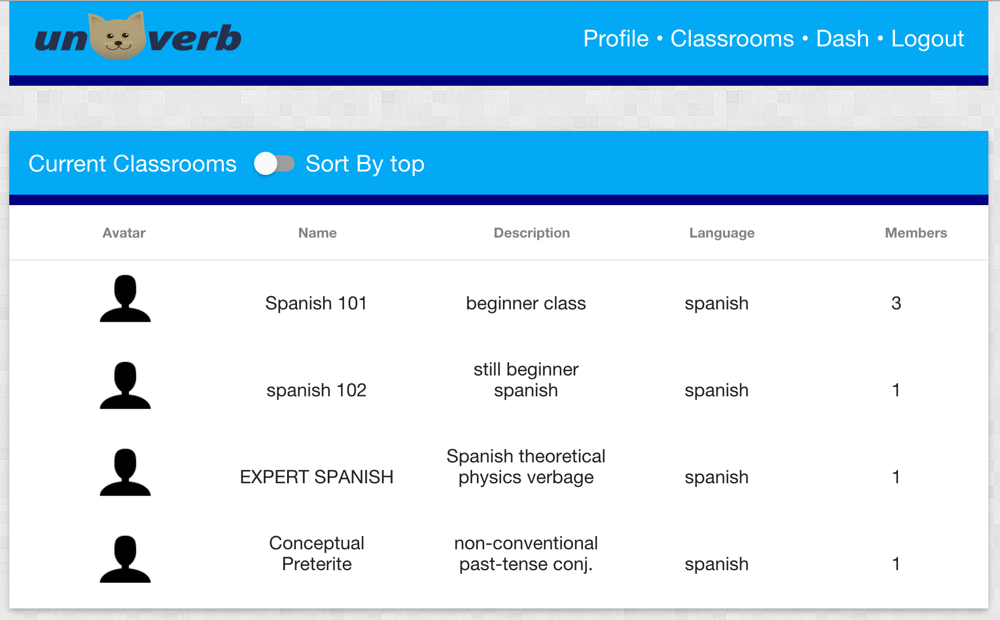
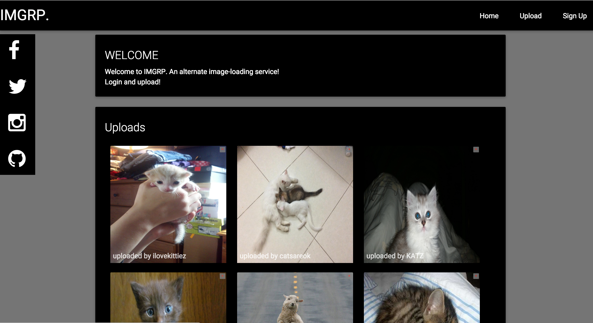
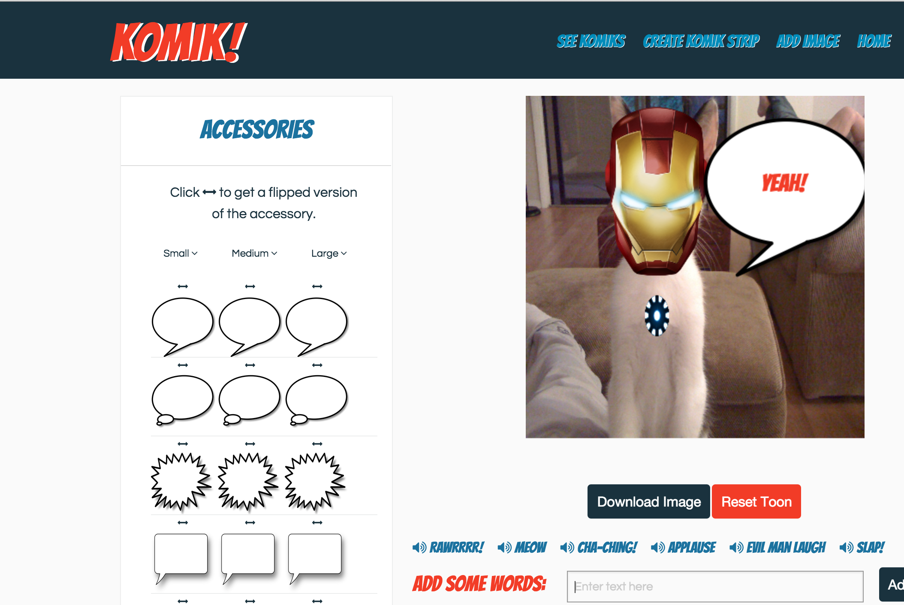
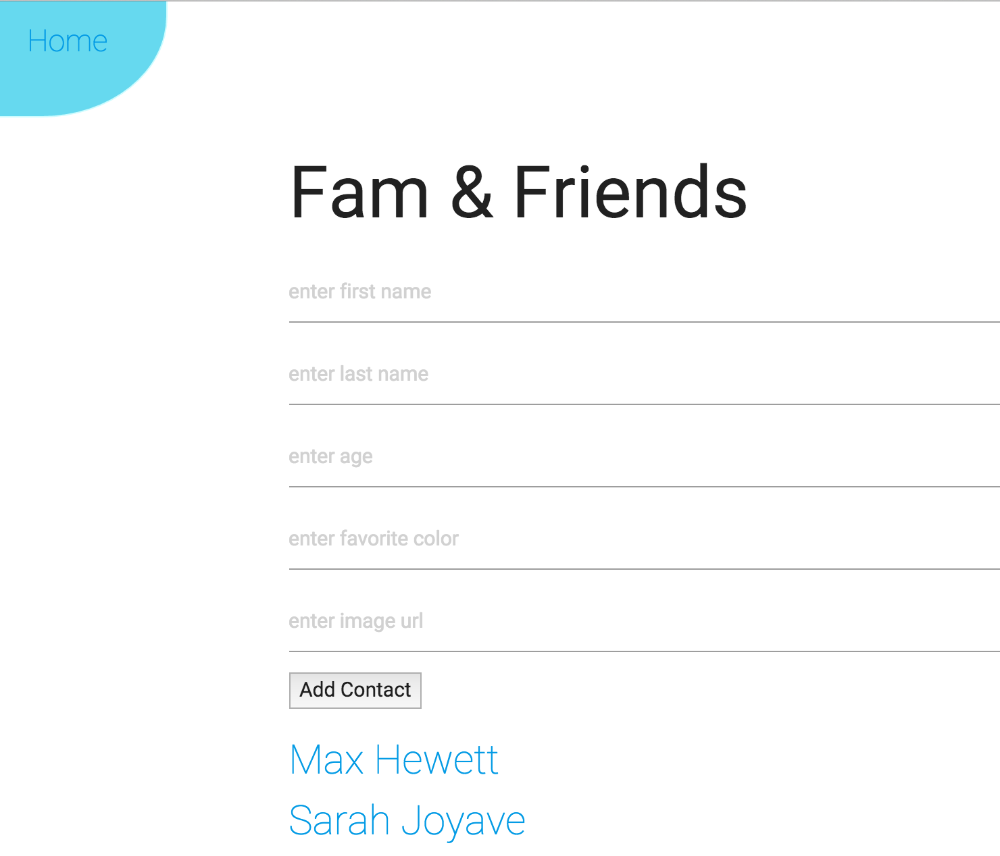
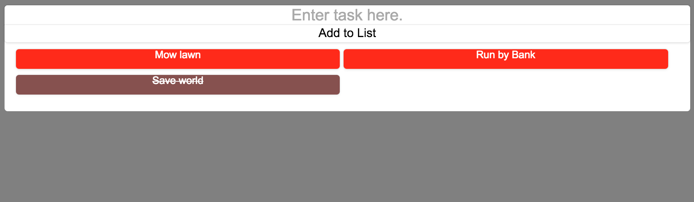

Finished Projects

Unoverb
A language conjugation training game.
Tools: AngularJS, User Login, Angular Material, ngCookies, Underscore, jQuery, uiRouter, Sass, Bourbon, Neat
Deployed Link
Github

IMGRP
A recreation of an image sharing site.
Tools: AngularJS, User Login, Angular Material, Cookies.js, Underscore, jQuery, Angular-route, Sass
Deployed Link
Github

Komik!
Add a comic book feel to your images.
Tools: AngularJS, CanvasHTML, jCanvas, Underscore, jQuery, uiRouter, Sass
Deployed Link

SimpleTacts
A contact list with social media and images.
Tools: Angular.js, Angular-route, Underscore, jQuery, uiRouter, Sass
Deployed Link
Github

To-do List
My version of a simple to-do list.
Tools: Angular.js, Underscore, jQuery, uiRouter, Sass, Bourbon, Neat
Deployed Link
Github
jjoyave.co
My History